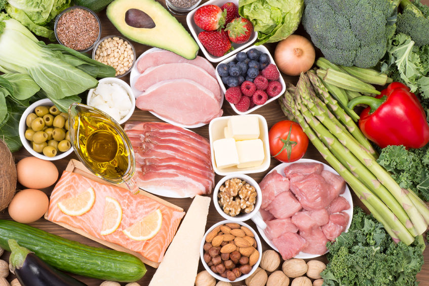
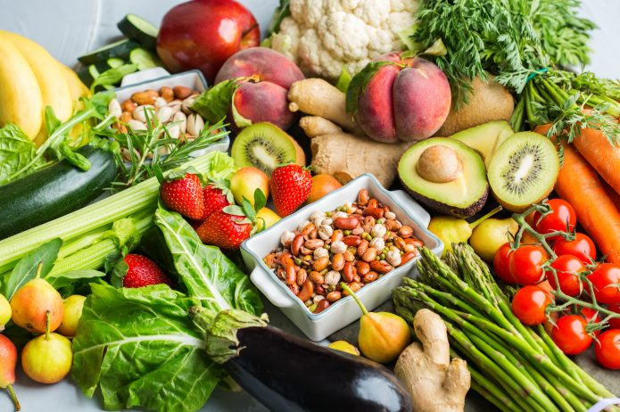

MARCIN BLOG
Najpopularniejsze diety

Dieta ketogeniczna
Dieta ketogeniczna to dość modny w ostatnim czasie model odżywiania. Zyskała popularność dzięki nietypowemu jak na dietę odchudzającą jadłospisowi, w którym główną rolę gra… tłuszcz! O co chodzi w diecie ketogenicznej, dla kogo jest przeznaczona i jak tłuszcz pomaga spalać tłuszcz?
Dowiedz się więcej
Dieta wegetariańska
Dieta wegetariańska to popularny sposób żywienia, który zyskuje coraz więcej zwolenników. Niegdyś rzadko spotykana, dziś stała się normą – szczególnie wśród młodych ludzi. Jakie są odmiany wegetarianizmu i dlaczego warto zainteresować się tą dietą?
Dowiedz się więcej

Dieta bezglutenowa
Bardzo modna ostatnio dieta bezglutenowa budzi coraz większe zainteresowanie. Na sklepowych półkach ze zdrową żywnością widać coraz więcej produktów oznaczonych znakiem „gluten free”. Czym tak naprawdę jest dieta bezglutenowa? Czy dla każdego jest ona właściwa? Przedstawiamy najważniejsze fakty i mity diety bezglutenowej
Dowiedz się więcej